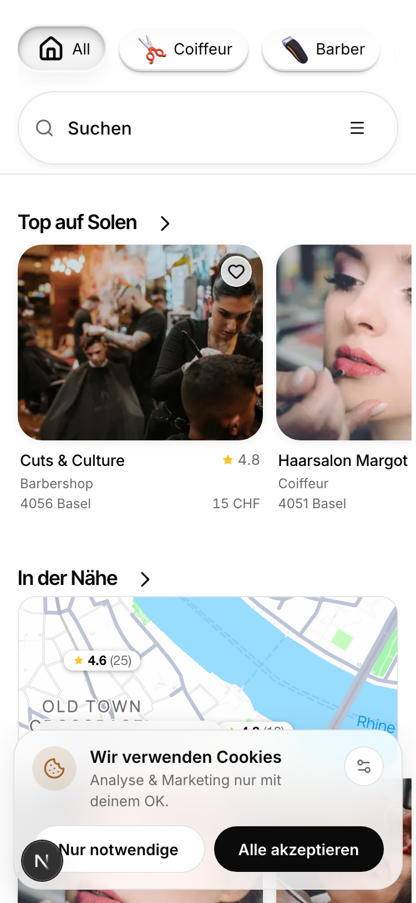

The real service step at 375 by 812, keyboard up, field focused, live seeded content. Flip either switcher; only that axis changes. K-B plus F-B is what ships today.

Beliebte Stores
Kategorien
K-A scrolls under. The sheet keeps its full height and ends at the bottom of the screen, so the list runs behind the keyboard and you scroll content up into view. Its top edge sits at 50, which is where the reference sits too, measured at 62.3pt against our 51.0pt. Nothing is ever cut by a hard white edge; the row at the keyboard line is half covered the way a row at the bottom of any scroller is. The list gets 336 of bottom padding so the last row can still be scrolled clear of the keys. Cost, measured: only 358px of list sits above the keyboard instead of 402, and this needs a code change, the sheet top stops being reduced by the keyboard inset.
K-B shrinks above. This is what ships today. The sheet rises to 6 and its bottom lands exactly on the keyboard top at 476, so every pixel of it is reachable without scrolling past the keys. Because the sheet rises as well as shrinks, it actually shows more list than K-A, 402px against 358px, which is the opposite of the usual expectation and is why this was worth rendering rather than describing. Cost: the card top is jammed 6px under the status bar with no breathing room above the field, and the row sitting on the 476 line is cut by a hard white edge rather than sliding under something.
F-A filled grey. Fill #F4F4F5, no border ring. This is what the reference does (its interior measures rgb(247,247,247)) and it is also what our own input law already says, LOCKFILE 3.5, inputs are filled grey at rest. On this axis the reference and our own rulebook agree, and the live overlay follows neither. That makes F-A the recommendation.
F-B white with hairline. White fill, 1px #E4E4E7. What is live now. It keeps the field visually identical to the collapsed rows underneath it, which is a real argument when those rows are folded away, and it is one less edge in a state that has very few.
Neither adds a focus ring or an ink border. That was rejected by name and is not on offer here.
The list below Kategorien in the real overlay continues with the personalised look grid. Its images are remote hosted and a mockup may not load remote assets, so it is left out here. It begins at y625, below the keyboard line in both options, so it is never in the first viewport either way and its absence changes nothing you are looking at.
The keyboard is a simulation at the 336px height the owner's screenshots were reproduced at. Its keys do nothing. The field radius stays 16 in both options, which is the live value; our input law says 12, but radius is not the axis under question and was left alone.